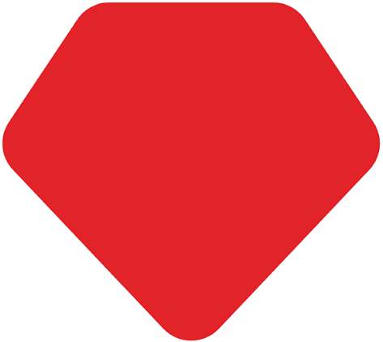

Ruby on Rails: главное изобретение

10.09.26
В 2003 году, работая в компании 37signals над системой управления проектами Basecamp, Ханссон создал веб-фреймворк Ruby on Rails . Изначально он разрабатывался как внутренний инструмент для ускорения разработки, но в 2004 году был выпущен как отдельный open-source проект .
Философия Rails строилась на двух принципах: конвенция важнее конфигурации
и не повторяйся
(DRY). Это позволило разработчикам сосредоточиться на бизнес-логике вместо рутинного написания повторяющегося кода .
За создание Ruby on Rails Ханссон получил премию «Hacker of the Year» на конференции OSCON в 2003 2005 году от Google и O'Reilly . В 2006 году Rails 1.0 удостоился Jolt Award за превосходство продукта .
Сегодня компании, начинавшие с Ruby on Rails, вместе стоят более половины триллиона долларов. Среди них Shopify, Airbnb, Coinbase, Square, Instacart, GitHub и X . В 2022 году Ханссон основал The Rails Foundation для поддержки документации, образования и развития экосистемы фреймворка .
Помимо Rails, Ханссон создал другие open-source проекты: Hotwire, Kamal, Omakub и Omarchy
Omarchy: операционная система нового поколения
В 2026 году Ханссон представил Omarchy — «весёлую, красивую и самоуверенную» Linux-систему, созданную в поисках «идеального компьютера» . Она уже привлекла более ста тысяч пользователей, ищущих операционную систему, готовую к эпохе AI-агентов и «податливых машин».Тогда же он основал Omacom Foundation — некоммерческую организацию, которая владеет торговыми марками, финансирует инфраструктуру и поддерживает open-source проекты, от которых зависит Omarchy. Десять founding-патронов вложили 10 миллионов долларов, чтобы «пророчество о годе Linux на десктопе наконец сбылось» .
37signals: Basecamp, HEY и другие продукты
Ханссон — совладелец компании 37signals, которую он развивает вместе с Джейсоном Фрайдом с 1999 года . Компания стоит за несколькими успешными продуктами: Basecamp — запущенный в 2004 году как одно из первых SaaS-приложений, он используется миллионами людей для организации проектов и командной работы. Это был первый продукт, построенный на Rails . HEY — свежий подход к электронной почте, запущенный в 2020 году как альтернатива Gmail и Outlook. Десятки тысяч клиентов уже оценили его . ONCE — возвращение к модели владения программным обеспечением вместо подписок. Первый продукт — Campfire, простой групповой чат за единоразовую плату. Второй — бесплатный онлайн-создатель книг Writebook .